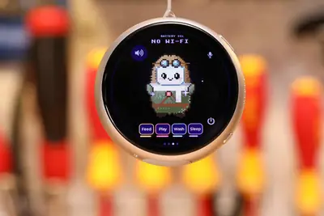
其他
其他全部主題
Mark Zuckerberg's Meta made AI look so stinking cute by giving it a squishy little face - and this holiday season, he wants to sell you a Muse Charm so you can carry your jolly AI helper around like a Tamagotchi. But I won't be buying one, because we have Muse Charm at home. It [
AI不再是面試作弊。Google試辦新面試，開放應徵者用Gemini寫程式，改考提示工程、驗證輸出與除錯。
IT之家 11 月 1 日消息，OpenAI 发布公告，宣布从 12 月开始，随着将 Work 的智能体能力引入至 ChatGPT 主要体验中，Plus、Pro 以及 Business 订阅方案的用户将 在 ChatGPT 与 Codex 之间共享统一的使用额度 。 IT之家获悉，在 ChatGPT 和 Codex 上的用量将统一按 Token 进行计量。额度的实际消耗速度取决于选用的模型及任务复杂度， 而即时对话（Instant Chat）不占用额度 。 官方表示，正在全面推进过渡筹备工作，以确保用户工作流程不受干扰。 预计绝大多数用户等待额度重置的频
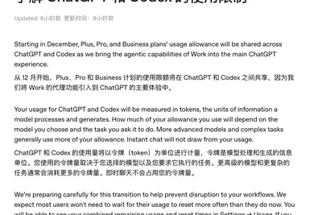
IT之家 11 月 1 日消息，据 Tom's Hardware 昨日报道，尽管消费级 PC 市场正在缩小，但英特尔有信心，AI 行业的需求将抵消客户端市场的下滑。 为此，英特尔正在将部分产能从客户端 CPU 重新分配给数据中心 CPU，扩展爱尔兰的 Fab 24 生产更多 Xeon 芯片，提前开始美国在亚利桑那州的 Fab 62 安装设备，并承诺生产 18A 芯片，同时在新墨西哥和马来西亚扩展先进封装能力。 英特尔 CEO 陈立武在公司财报电话会议上表示：“行业仍在经历史上最严重的供应短缺之一，这主要由对超级智能前所未有的需求推动。在这样的背景下，我对
How We Took Over ChatGPT Accounts Parameter Labs describe an exploit they found against ChatGPT's implementation of the artifacts pattern (OpenAI used to call this "Canvas" but it looks like the latest revision is called HTML previews ), where interactive custom HTML apps are dis
IT之家 11 月 1 日消息，据 The Information 昨天报道，Meta 最近与中国企业傅利叶（Fourier）合作，打造一款名为 Max 的人形机器人原型。 据介绍，这款机器人研发用时三个月，其身高接近 5 英尺 （IT之家注：约 1.5 米） ，体重约 106 磅 （约 48.1 千克） ，搭载英伟达 Thor 芯片。 Meta 首席执行官马克 · 扎克伯格将这款人形机器人 ， 视为 Muse 人工智能模型的“物理化身” ，认为它能够承担日常家务。 IT之家从原报道获悉，两家公司已在今年 9 月启动 Max 2 原型产品的研发工作。新机
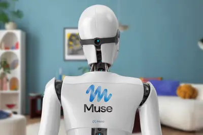
IT之家 11 月 1 日消息，美国白宫科学与技术顾问会议主席戴维 · 奥利弗 · 萨克斯（David Oliver Sacks）最近出席 All-In 播客，深入分析 Anthropic 的 S-1 注册文件， 称这家人工智能初创公司很可能成为资本主义历史上最伟大的企业 。 Anthropic 在文件中透露，公司 2026 年上半年营收 163 亿美元 （IT之家注：现汇率约合 1,087.14 亿元人民币） ，账面现金 1,120 亿美元 （现汇率约合 7,469.91 亿元人民币） ，预计 2026 年度经常性收入达 1,000 亿美元 （现汇率约
Release: datasette-llm 0.1a9 I have some big upgrades to Datasette Agent in the pipeline, but in the meantime here's a tiny user experience improvement to the underlying datasette-llm plugin. It now picks up the default model used by LLM , which means you can start using Datasett
Apple's new CEO defended the company's current position in the AI landscape.
On November 4 at Boston’s SoWa Power Station, get ready for a full day packed with meaningful networking opportunities, actionable insights, and connections that could change the trajectory of your idea and startup. Register before all prices go up at the door.
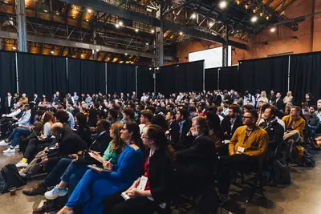
An NAACP lawsuit accuses the SpaceX-owned AI company of violating the Clean Air Act.
Article URL: https://twitter.com/jiahaoshao1/status/2116475922190922088 Comments URL: https://news.ycombinator.com/item?id=50319358 Points: 153 # Comments: 54
OpenAI’s latest funding round doesn't seem to be living up to expectations.
IT之家 10 月 31 日消息，当地时间 30 日。据美国 CNBC 报道，鸿海计划进一步扩大 AI 服务器业务，并加大在美国的生产布局。董事长刘扬伟表示，AI 基础设施市场需求依然强劲，集团希望借此进一步提高市场份额。 刘扬伟在接受采访时透露，公司目前占据全球约 40% 的 AI 服务器市场份额，预计明年有望提高至约 45%，未来数年则 有机会达到 50% 。 长期以来，鸿海以代工组装苹果 iPhone 闻名。近年来，AI 基础设施业务逐渐成为集团的重要增长引擎。 ▲ 图源鸿海 刘扬伟预计，未来三至五年，AI 基础设施业务将 贡献富士康 60% 至
TPU 在太空成功開機！Google 衛星上的 AI 模型傳回第一首詩。Google 執行長 Sundar Pichai 在 X 上將這次成果形容為 Project Suncatcher 的「hello world」里程碑。
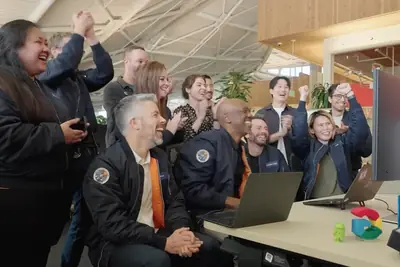
交易完成後，NVIDIA 預計持有 Naver 約 4.54% 股權，躍居第三大股東。
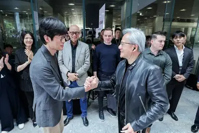
IT之家 10 月 31 日消息，上汽集团宣布荣威家越 07 将于 11 月 1 日开启全国交付。荣威家越 07 于 10 月 23 日上市，包含四款车型，限时权益价区间 11.98-14.48 万元。 荣威家越 07 长宽高为 4900*1910*1745mm， 轴距 2908mm ，提供龙晶紫、玛瑙灰、宝石蓝、珍溪黑、钻石白、翡翠绿等宝石车色，可选绵云青空、坚果可可、云绒暖灰内饰色，车内还配有 AI 灵光氛围灯、双 15.6 英寸 2.5K 超清大屏。此次新车搭载 AI 极速制冰冷暖两用冰箱，可实现最快十分钟制冰。 IT之家注意到，该车行业 首搭豆包
IT之家 10 月 31 日消息，据日经亚洲今天（31 日）凌晨报道，AI 投资热潮推高了存储芯片需求，市场已出现 供不应求的局面 。受此推动，铠侠、三星、SK 海力士、美光、闪迪五家全球主要存储芯片厂商，上季度的营业利润和净利润总额 首次超过美国五大科技公司 。 QUICK FactSet 数据显示，2026 年 7 月至 9 月（美光为 6 月至 8 月），五家存储芯片厂商的营业利润合计 达到 32 万亿日元 （IT之家注：现汇率约合 1.35 万亿元人民币） ，是 上年同期的 10 倍 。 同期， 谷歌母公司 Alphabet、微软、亚马逊、Met
IT之家 10 月 31 日消息，DeepSeek Harness 官方团队今日发布《Super-agent 设计探索：迈向更自主的 Agent 系统》一文，介绍了其面向工程实践的 Super-agent 架构设计思路。 随着大模型执行单个任务时越来越不需要人的干预，限制生产力进一步提升的因素正逐渐转向人的注意力，Agent 系统需要从被动响应指令的单任务工具，向持续在线、能够并行处理多项任务的自主协作者演进。 DeepSeek 表示，现有主流 Agent 设计仍以单一 Session（会话）为基本单位，不同 Session 之间相互独立。用户并行推进多
IT之家 10 月 31 日消息，据路透社报道，10 月最后一个交易日的市场表现相当惨烈，今年以来持续上涨的科技股再次遭遇考验。 当地时间 30 日，纳斯达克综合指数创下 6 月以来最大单日跌幅 。英特尔和社交媒体平台 Reddit 股 价双双下跌 29% ，AI 基础设施投资热潮的重要受益者之一、芯片制造商闪迪也下跌 13%。 这轮抛售发生在 大型科技股本周接连下跌之后 。微软、Meta、亚马逊和谷歌母公司 Alphabet 等 AI 基础设施建设的核心参与者，股价周五 再跌 1% 至 2% ，此前本周早些时候已经出现明显回落。 凯投宏观指出，过去 1
IT之家 10 月 31 日消息，10 月 31 日，西湖世界模型研究中心在西湖大学云谷校区成立。这是西湖大学面向物理智能领域设立的校级交叉科研平台。 该中心由西湖大学工学院博士生导师、助理教授，人工智能企业 KMind 联合创始人兼首席科学家于开丞担任主任，由西湖大学人工智能讲席教授、人工智能系系主任金耀初担任首席科学家，并有多位 PI （首席研究员）共同承担各方向研究任务。 IT之家从官方介绍获悉，中心面向人工智能从语言认知走向物理交互的发展方向，聚焦世界模型与物理智能， 致力于突破智能系统理解物理规律、预测环境变化和开展交互决策的核心瓶颈 ，打造具
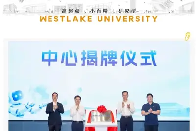
IT之家 10 月 31 日消息，10 月 31 日，无界动力宣布与京东正式签署战略合作协议，围绕零售场景应用、商业化平台与生态渠道、产业资源协同等多个维度开展立体化合作。 此次合作已迎来首批成果：10 月，双方首个零售合作项目落地， 无界动力机器人 K15 已于七鲜咖啡（西宸里店）和七鲜咖啡（长楹天街店）正式上岗 ；同期，首批机器人产品通过京东平台面向第三方客户完成交付。 在此基础上， 双方将迅速推进 1000+ 七鲜门店的规模化复制 ，并同步深化京东 MALL、京东 RoboBase 等领域的合作。依托京东丰富的线下实体消费场景，双方将围绕门店数字化
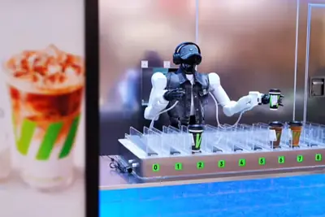
IT之家 10 月 31 日消息，据彭博社报道，全球存储芯片供应短缺问题日益严重之际，今天（31 日）下午，OpenAI CEO 萨姆 · 奥尔特曼在韩国与三星集团高层会面，双方计划进一步加强在存储芯片供应和 AI 基础设施建设方面的合作。 据三星发布的声明，奥尔特曼此次在龙仁市与三星旗下电子、金融和生物科技业务的 约 50 名高管 举行了会谈。双方讨论了未来十年 AI 对产业格局、企业决策方式和商业发展的影响。 多种存储产品供应不足，正在给全球电子行业带来压力，芯片价格也随之大幅上涨。数据中心建设需求持续增长，各大运营商对存储芯片的争夺进一步加剧。AI
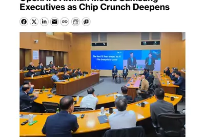
Named “Volta-Autodoxer,” the recently uncovered malware uses AI tools to collect troves of data about victims, from login credentials and credit card numbers to Discord sessions and UberEats receipts.
【京东活动可能随时变更，需以实付款为准】 华为 Vision 智慧屏 6 SE RGB 开售于 2026 年 8 月，75 英寸定价 5799 元。 京东 11.11 大促期间，按下方步骤下单，叠加 15% 国补后仅需 3333.98 元： 点击下方卡片，可领 400 元券。 大部分小伙伴还可选择“组合购”立减 135.12 元： 示例凑单品 。 京东 华为 Vision 智慧屏 6 SE RGB 75 英寸 组合购 3333 元 领 400 元券 京东 11.11 无门槛红包至高 26888 元，支持即领即用，下单直接当钱花： 点此抽取 。 该机是华为
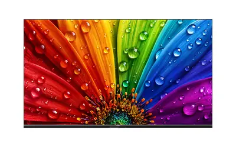
IT之家 10 月 31 日消息，据外媒 TechSpot 今天（31 日）晚间报道，香港工具品牌 Arrowmax 在 Kickstarter 推出了一款 号称全球首创 的 AI 电动螺丝刀 S1，众筹项目启动后不到 24 小时便达成目标。产品起售价 80 美元 （IT之家注：现汇率约合 533.6 元人民币） ，预计 2027 年 4 月开始发货。 S1 希望借助 AI 简化螺丝刀的使用流程， 从识别螺丝、挑选批头到调节扭矩 ，都能交由系统辅助完成。 S1 的机身尾部装有一根接触探针，使用时只需将探针抵住螺丝头，就能让摄像头与螺丝保持合适的拍摄距离，
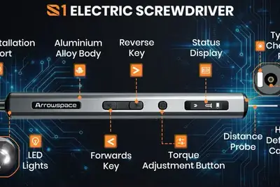
IT之家 10 月 31 日消息，智己汽车今日宣布，全新一代智己 LS6 自 9 月上市以来，累计交付突破 8000 台。 全新一代智己 LS6 于 9 月 23 日宣布上市，共推出三款车型，官方指导价 20.29 万元起，叠加上市权益后 19.79 万元起。IT之家汇总如下： Max 版 19.79 万元：76kWh 电池，CLTC 650km 超级后驱，零百加速 6.4s Pro Max 版 21.79 万元：93kWh 电池，CLTC 782km 超级后驱，零百加速 5.4s Ultra 版 25.99 万元：103kWh 电池，CLTC 750k
A biotech startup let an agent choose a gene therapy and successfully inject the treatment, offering a startling glimpse of the future of research labs.
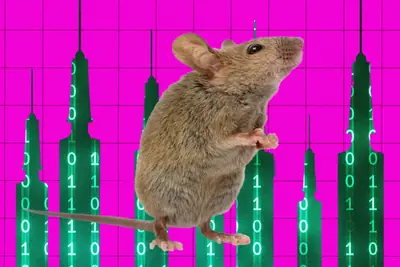
人工智慧（AI）運算需求持續攀升，半導體產業的技術競爭已從電晶體微縮，進一步延伸至先進封裝、3D 整合及新世代 […]
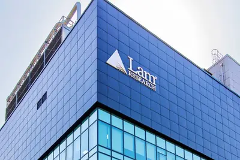
正計畫於 2027 年上市的 OpenAI，積極尋求盡快完成本輪募資，部分原因是希望搶在 Anthropic 即將上市前完成交易。
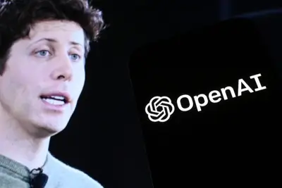
據日經報導，日本村田製作所將在未來 5 年投入 1 兆日圓（約 63 億美元），以因應人工智慧（AI）伺服器及 […]